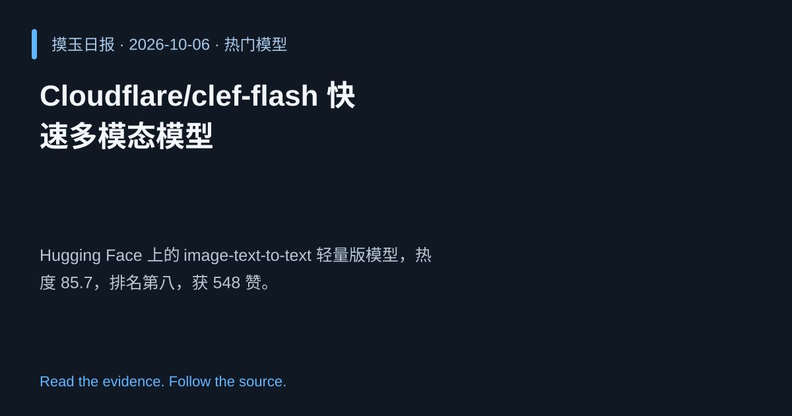

2026-10-06 · Asia/Shanghai · 热门模型 · #8
Cloudflare/clef‑flash 快速多模态模型
Cloudflare/clef-flash
Hugging Face 上的 image‑text‑to‑text 轻量版模型，热度 85.7，排名第八，获 548 赞。
为什么值得关注
轻量化加速推理，满足低延迟场景需求，显示 Cloudflare 多模态布局。
- 基于 clef 的快速推理版
- 热度 85.7/100，适合资源受限环境
- 社区点赞 548 次

热度 85.7 / 100；排名与评分保留该期记录。